1- Introdução:
Funções importantes que iremos utilizar:

Funcionalidade/Nomenclaturas:
Decision flow = Fluxo de decisões
Decision table = Tabela de decisão
Decision tree = Árvore de decisão
Function = Função
ScoreCard = Sistem de scoragem
Business Term Set = Variáveis que os usuários podem criar
Ruleset (Rulebuilder) = Regras "simples" de negócios
Ao ligar o PC, como nosso RMA está embarcado no eclipse, devemos abrir o eclipse e startar o projeto:
Rule Maintenance Application - Start [Iniciar] - Finish.
Rule Maintenance Application - Open [Abrir].
2- Decision Flow
Com o projeto rodando no local host (RMA), clicar com o botão direito sobre a pasta Business Library Folder
Ir em New - Decision Flow - dar o nome de Fluxo_Principal. Lembre-se que o nome deve ser o mesmo que você atribuiu no tutorial anterior.
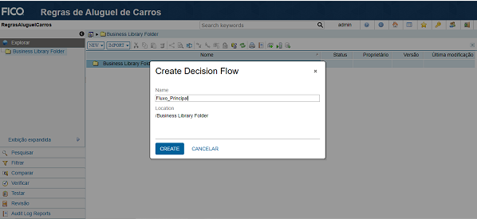
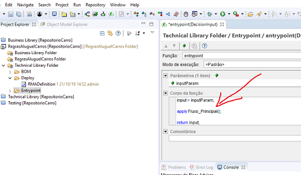
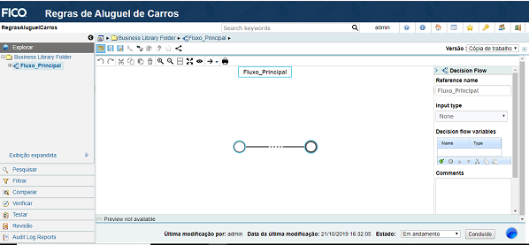
3- Organizando o projeto em pastas
Clicar na pasta principal Business Library Folder e ir na aba: NEW - FOLDER
Nome: Ruleset
Clicar na pasta principal Business Library Folder e ir na aba: NEW - FOLDER
Nome: BusinessTerm
Clicar na pasta principal Business Library Folder e ir na aba: NEW - FOLDER
Nome: DecisionTable
Clicar na pasta principal Business Library Folder e ir na aba: NEW - FOLDER
Nome: DecisionTree
Clicar na pasta principal Business Library Folder e ir na aba: NEW - FOLDER
Nome: Function
Clicar na pasta principal Business Library Folder e ir na aba: NEW - FOLDER
Nome: Scorecard
Observação: Não é necessário criar todas as pastas agora. Você pode ir criando conforme necessidade. Estou criando todas agora para fins didáticos.
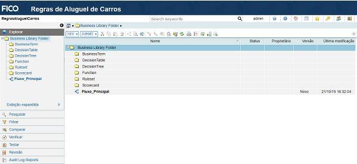
4- Decision Tree
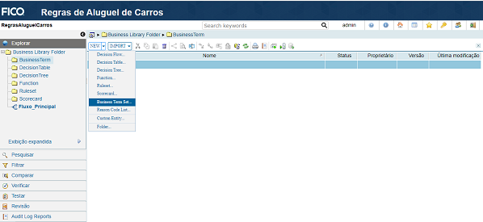
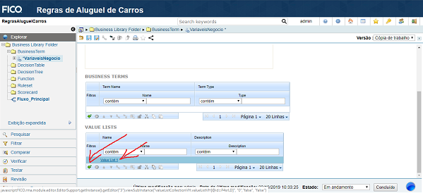
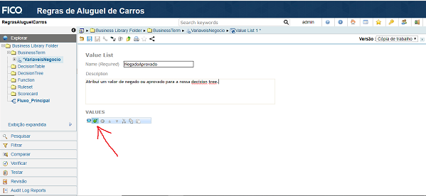
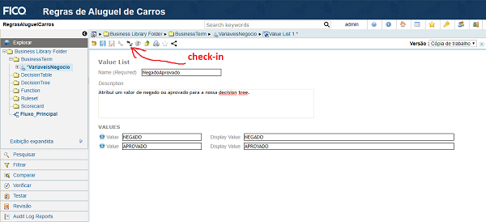
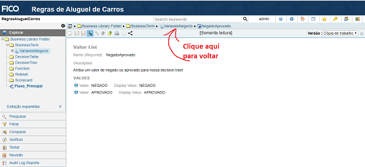
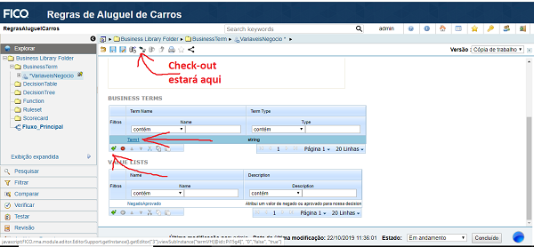
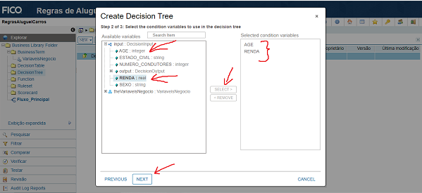
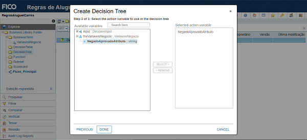
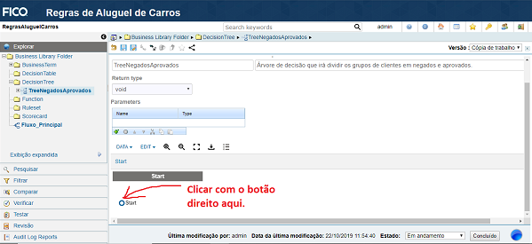
- Basta digitar 18 e clicar em Add. Depois clicar em Apply.
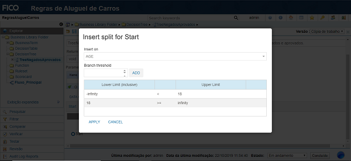
Iremos criar nossa segunda segmentação: clientes com renda inferior a R$ 1000 serão considerados Negado.
Basta clicar com o botão direito do mouse sobre a próxima área que queremos segmentar e ir na opção Insert Split
Neste caso, queremos segmentar os clientes que têm 18 anos ou mais, pois os menores de idade já foram classificados como Negado.
Observe a imagem a seguir:
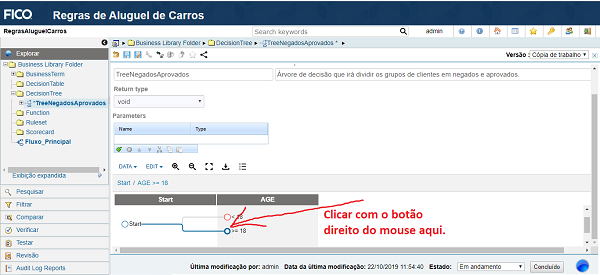
Na tela de Insert Split, selecione a variável renda.
Coloque o valor de 1000 e clique em ADD. Depois clique em Apply.
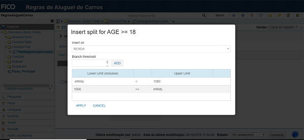
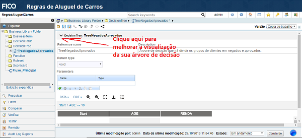
Por fim, iremos atribuir os valores de Negado e Aprovado à nossa árvore de decisão.
Clicar com o botão direito do mouse sobre o primeiro valor a ser acionado.
Selecionar a opção Assign Value e ecolher a ação Negado.
Repetir o processo para os outros três pontos.
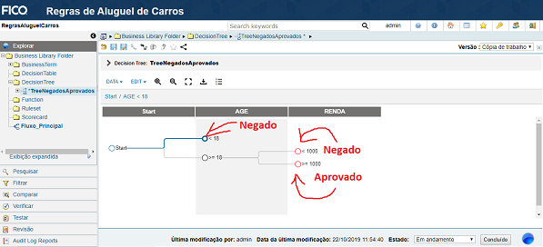
Sua Decision Tree deverá ficar como na imagem abaixo. Agora basta fazer o check-in para salvar as alterações.
Clicar em Fluxo_Principal para acrescentar nossa árvore de decisão.
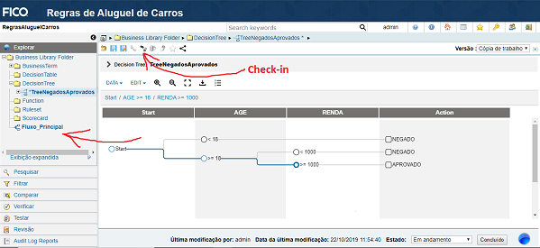
Adicionando a Decision Tree no Fluxo.
Após clicar no Fluxo_Principal, você deve clicar em check-out e adicionar um Task, como ilustrado na imagem abaixo.
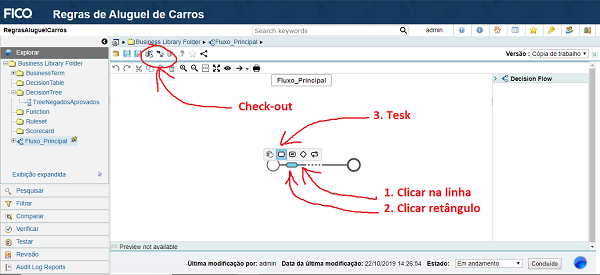
Após adicionar a Task, você deve escolher um nome, chamar a Decision Tree que acabamos de criar e clicar em Apply. (Fazer o check-in)
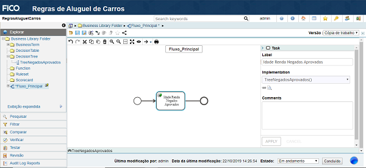
4- Function
Neste tópico, iremos criar uma função para que de fato nossa Decision Tree criada no tópico anterior tenha um efeito de output.
Até o momento, nossa Decision Tree divide o grupo de clientes em Aprovados e Negados, conforme sua Idade e Renda.
Agora iremos criar uma função que recebe estes valores (Aprovado ou Reprovado) e armazena na variável DECISION. Lembrando que esta variável foi criada no arquivo.jar. (Em breve farei mais tutoriais sobre este arquivo).
Criando a função.
Clicar na pasta Function que criamos e em seguida ir em NEW - Function.
Colocar o nome de FunctionNegadosAprovados.
Nota-se que o nome da função é semelhante ao da árvore de decisão (TreeNegadosAprovados). Isso facilita a compreensão das partes.
Clique na opção [Switch to Rule Builder] para acionar o modo de edição simples de código. Depois clique no editor de código.
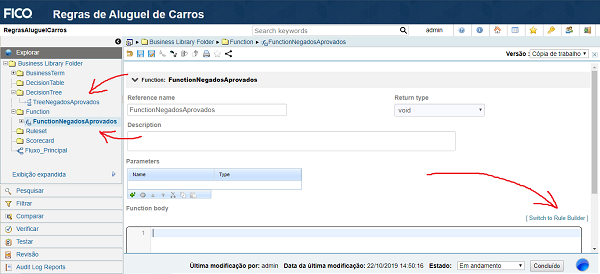
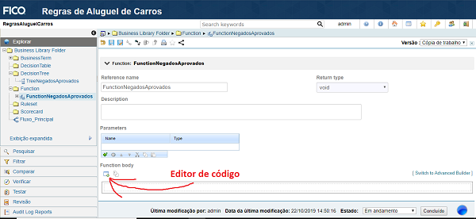
No editor de código, escolha a variável que deseja armazenar os outputs da árvore de decisão.
Para este tutorial, utilizaremos a variável Decision.
Escolher a variável que vai armazenar no nosso output.
O editor funciona no modo de arrasta e solta. Você clica na variável, arrasta até o lugar e solta.
Clique em Done para finalizar.
Faça o check-in
Observe as imagens abaixo como exemplo:
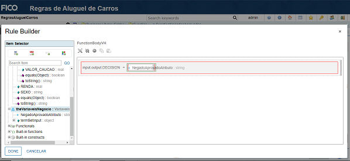
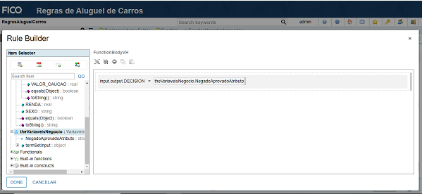
Adicionando a função ao Fluxo_Principal:
O processo é semelhante ao adicionar a árvore de decisão no fluxo.
Após clicar no Fluxo_Principal, você deve clicar em check-out e adicionar uma Task.
Após adicionar a Task (depois da Task de árvore de decisão) você deve Escolher um nome, chamar a Decision Tree que acabamos de criar e clicar em Apply. (Fazer o check-in)
Observe a imagem a seguir:
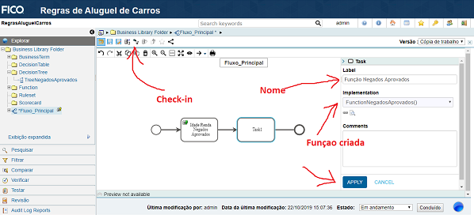
5- Testing
Até o momento, criamos apenas uma regra de negócio. Nosso programa deve analisar a idade e renda do cliente e retornar a sua aprovação ou reprovação.
Para saber se tudo está correto até o momento, iremos fazer um teste.
Gerando arquivo de teste.
Clicar na aba Testar e ir em Decision Testing.
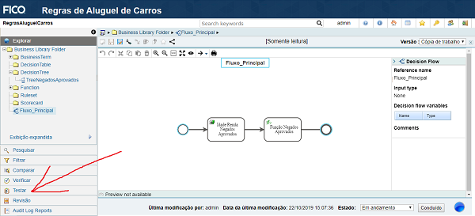
Selecionar a opção Test.
Selecionar a opção Entrypoint(DecisionInput): DecisionInput
Ir em CONFIGURE DATA para gerar um modelo de teste.
Para gerar o modelo de teste, iremos utilizar as variáveis Age e Renda no input e Decision no Result.
Clicar em Download para concluir.
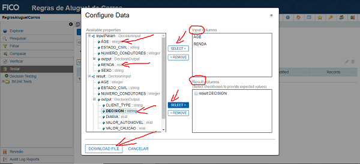
Ir na sua pasta de Downloads e abrir, no notepad++, o arquivo (inputdata.csv) que foi gerado.
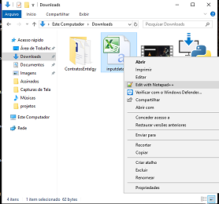
Você deve inserir as informações para testar:
Obs: os valores Result-State e Result-Detail não devem ser preenchidos, mas as vírgulas devem ser mantidas. O valor de result:DECISION também não deve ser preenchido.
Seguir o exemplo abaixo:
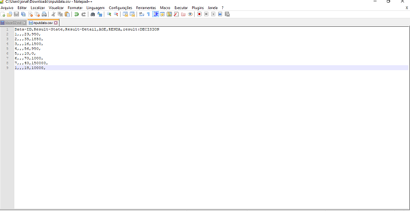
Salvar o arquivo na pasta C:\Blaze\projetos\unit-tests.
Caso não tenha esta pasta, basta criá-la e mover o arquivo para dentro dela.
Testando a aplicação.
Agora que você tem o arquivo de teste com os dados a serem testados, basta clicar em UPLOAD DATA FILE e selecionar o arquivo de teste que criamos.
Lembrando que o arquivo deve estar na pasta C:\Blaze\projetos\unit-tests. O arquivo se chama inputdata.csv
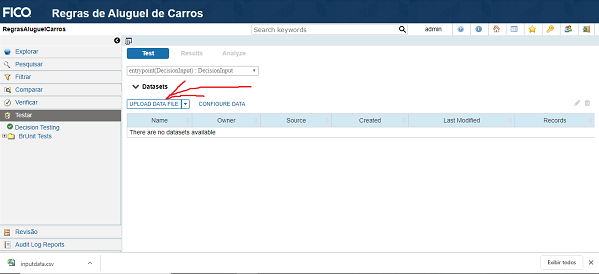
Ao carregar o arquivo, basta clicar em RUN TEST e esperar pelos resultados.
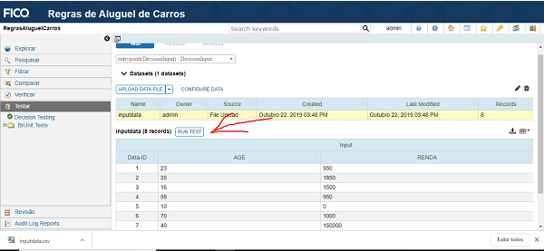
Resultados do teste.
Como podemos observar, todos os testes foram bem sucedidos. Todos os clientes que tinham menos de 18 anos e/ou renda inferior a R$ 1000 foram taxados como Negados e os demais como Aprovados.
Esta foi uma simulação simples de aprovação para alugar carros. Muitas variáveis podem ser levadas em consideração. Modelos de decisão mais avançados serão discutidos nas próximas publicações.
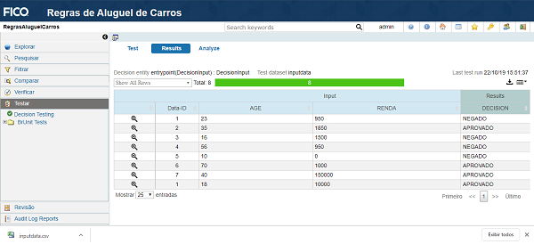
Mais Tutoriais - Blaze
2º Etapa - Utilizando o RMA :
3º Etapa - Deploy no Tomcat :
4º Etapa - Avançado - Em construção